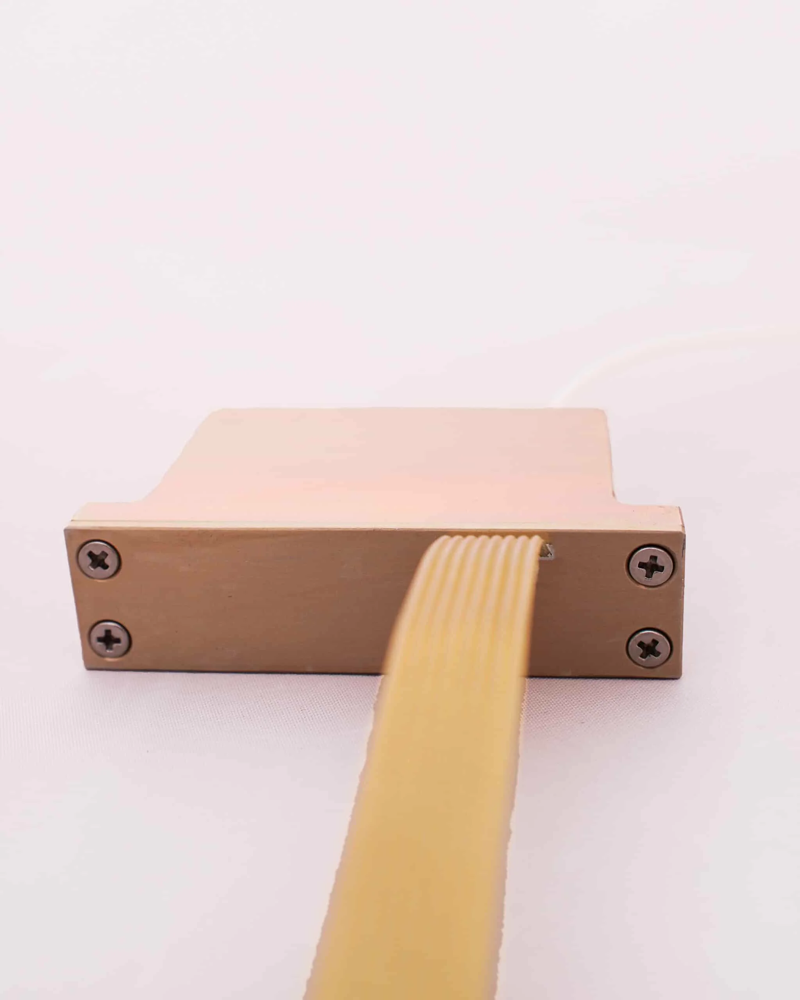

Seria HV3 — standardowe przetwornice DC/DC od ±150 V do ±6000 V do zastosowań kosmicznych i wymagających wysokiej niezawodności.
Nasze moduły WN są dotychczas stosowane do zasilania:
w następujących zastosowaniach:
Aby zwiększyć zaufanie do stosowanych komponentów i skrócić terminy dostaw dzięki ograniczonej liczbie pozycji magazynowych w dużych ilościach, rodzina przetwornic WN DC/DC wykorzystuje w większości te same komponenty aktywne. Komponenty te pomyślnie przeszły testy dawki całkowitej do 30 krad.



Napięcie wejściowe: +12 V ±10%. Dostępne w konfiguracji dodatniej i ujemnej. Instrukcje techniczne dostępne na życzenie.
| Model | Napięcie wyjściowe | Prąd wyjściowy | Tętnienia wyjściowe | Instrukcja techniczna |
|---|---|---|---|---|
| HV3 +150 V | od 0 do +150 V | 1.2 mA | maks. 30 mV | Wyślij zapytanie |
| HV3 −150 V | od 0 do −150 V | 1.2 mA | maks. 30 mV | Wyślij zapytanie |
| HV3 +200 V | od 0 do +200 V | 1 mA | maks. 25 mV | Wyślij zapytanie |
| HV3 −200 V | od 0 do −200 V | 1 mA | maks. 25 mV | Wyślij zapytanie |
| HV3 +1200 V | od 0 do +1200 V | 500 µA | typ. 15 mV | Wyślij zapytanie |
| HV3 −1200 V | od 0 do −1200 V | 500 µA | typ. 15 mV | Wyślij zapytanie |
| HV3 +3000 V | od 0 do +3000 V | 150 µA | typ. 15 mV | Wyślij zapytanie |
| HV3 −3000 V | od 0 do −3000 V | 150 µA | typ. 15 mV | Wyślij zapytanie |
| HV3 +3500 V | od 0 do +3500 V | 50 µA | typ. 15 mV | Wyślij zapytanie |
| HV3 −3500 V | od 0 do −3500 V | 50 µA | typ. 15 mV | Wyślij zapytanie |
Wymiary HV3 z zalewą i obudową
| Parametr | Wartość | Jednostki |
|---|---|---|
| Długość | 66.0 | mm |
| Szerokość | 35.5 | mm |
| Wysokość | 17.8 | mm |
| Masa | ~81 | g |


Napięcie wejściowe: +12 V ±10%. Moduły zalewane dostępne w wersji z obudową. Instrukcje techniczne dostępne na życzenie.
| Model | Napięcie wyjściowe | Prąd wyjściowy | Tętnienia wyjściowe | Instrukcja techniczna |
|---|---|---|---|---|
| HV3 +6000 V | od 0 do +6000 V | 1 mA | maks. 150 mV | Wyślij zapytanie |
| HV3 −6000 V | od 0 do −6000 V | 1 mA | maks. 150 mV | Wyślij zapytanie |
Wymiary HV3 z zalewą i obudową
| Parametr | Wartość | Jednostki |
|---|---|---|
| Długość | 123.5 | mm |
| Szerokość | 54 | mm |
| Wysokość | 27 | mm |

Jeśli żądanego napięcia lub prądu nie ma w naszym katalogu, w krótkim czasie i w konkurencyjnej cenie zaproponujemy rozwiązanie na zamówienie.
Określ swoje wymagania, wypełniając formularz: